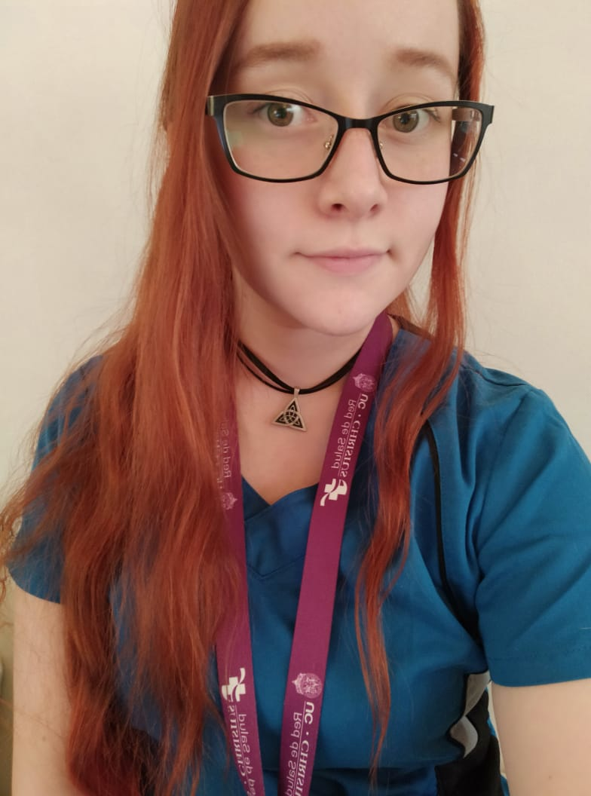

|

|
Andrea Valentina Fuentes Quirola
DUOC UC
Telefono contacto: (+569)57015625
Sede San Carlos de Apoquindo
Alumna de la escuela de Informática y telecomunicaciones
|
Técnico en enfermeria y estudiante de Informática, poseo muchos años de experiencia como técnico en enfermeria en las diferentes áreas de la salud, tanto en farmacia, como en hospitalizados, urgencias, cesfam, entre otros.
RAMOS YA CURSADOS EN INFORMÁTICA DUOC UC
- Diseño y gestion de Requisitos
- Diseño de prototipos
- Desarrollo de Software de Escritorio
- Programación de Algoritmos
- Modelamiento de Bases de Datos
- Consulta de bases de Datos
- Matematicas (I y II)
- Habilidades básicas de Comunicación
- Habilidades de Comunicación efectiva
- Ingles (I y II)
EXPERIENCIA LABORAL
Fechas---------
Trabajos
| 2014: |
Cesfam Maria laffe |
| 2015: |
Hospitalizados - Hospital de Doñihue |
| 2017: |
Urgencias - Hospital Regional de Rancagua |
| 2018: |
Asistente de Curaciones - CONSAN |
| 2018: |
Pabellón - Hospital Clinico UC Christus |
| 2018-2020: |
Farmacia - Hospital del Salvador |
HABILIDADES
| Informatica: Programación Básica, Manejo de bases de datos y Excel Intermedio. |
| Enfermeria: Habilidades Blandas, Trabajo en equipo, Trabajo bajo presion, Manejo de pctes., Manejo de maquinaria de farmacia. |
Mis Hobbies
Mis Contactos